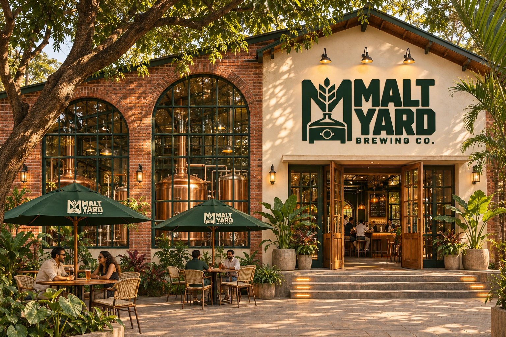

INDEPENDENT SPIRIT. SHARED TABLES.A GOOD PLACE.
A GOOD PLACE.
A GREAT POUR.
A little fresh air. Something cold.
An evening that feels like your own.
SMALL BATCHES. BIG CHARACTER. ✳ GOOD BEER. BETTER COMPANY. ✳
01 / A LITTLE PATIENCE. A PERFECT POUR.
SLOWLY DOES ITPOURED WITH
POURED WITH
A LITTLE CARE.
Follow the pour. Watch the golden beer rise, the bubbles lift and the head settle. Good things take a moment.
02 / FIND YOUR KIND OF POURMEET YOUR
MEET YOUR
NEXT USUAL.
Six distinct characters. One good place to find yours.
Not sure where to start? Make it a tasting flight.
Find your table04 / THE HANDS BEHIND YOUR HAPPY PLACEGOOD AT
GOOD AT
THEIR CRAFT.
GREAT WITH PEOPLE.
The brew, the plate, the first hello.
It’s the little details that make a place feel like yours.
05 / MAKE AN EVENING OF ITCOME FOR
COME FOR
A PINT.
STAY FOR
THE PEOPLE.
Your favourite people. A table in the yard.
Let’s start with a little plan.
THE GOOD-EVENING PLANNERWHO’S COMING
WHO’S COMING
TO THE YARD?
Choose your day. Bring your people.